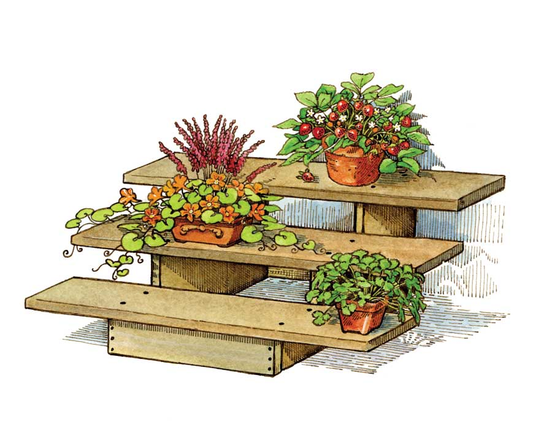

When arthritis settled in my mother’s hips and knees, it became hard for her to get up and down the back porch steps to tend to the small vegetable and herb garden that she loved.
I was driving to town one day and noticed a house with several flower pots sitting on both sides of the front steps, and it got me thinking about a garden plan for her.
I bought two wooden step forms (stringers), nailed boards across the bottom to connect the two stringers, and attached 4-foot-long boards for shelves. I gave the unit a couple coats of deck finish and placed it on Mother’s screened-in back porch.
The following spring, Mother enjoyed her pots of mint, sage, parsley, chives, lemon verbena, radishes, bell peppers and strawberries.
|
 KRISTEN HURLIN Gardening in small spaces is easier with these simple stair-step shelves. |
|
|